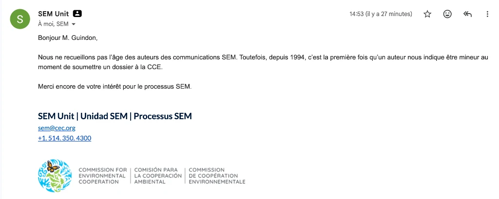
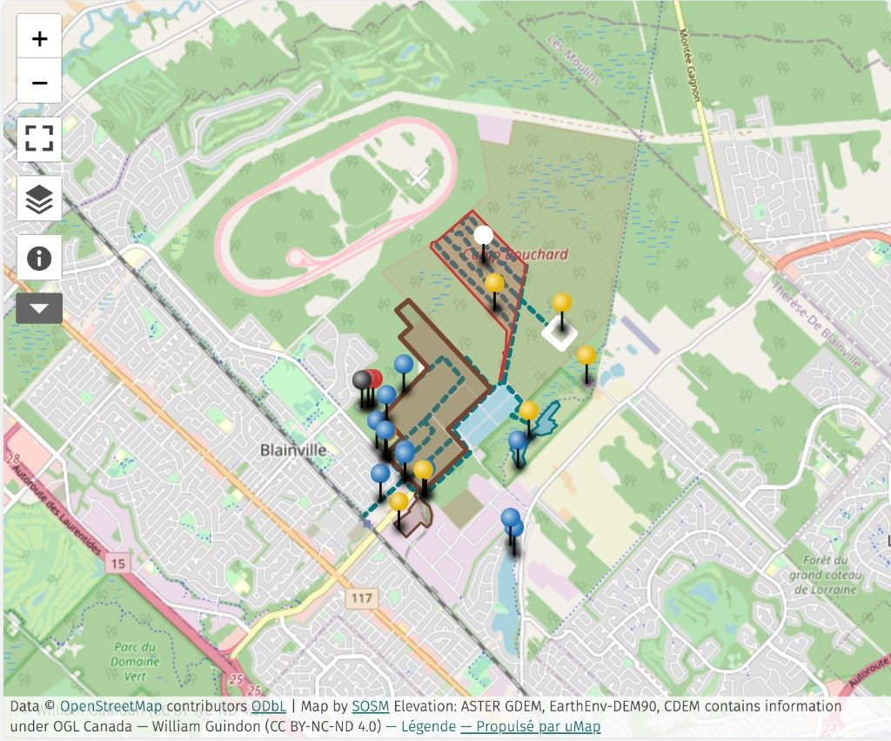
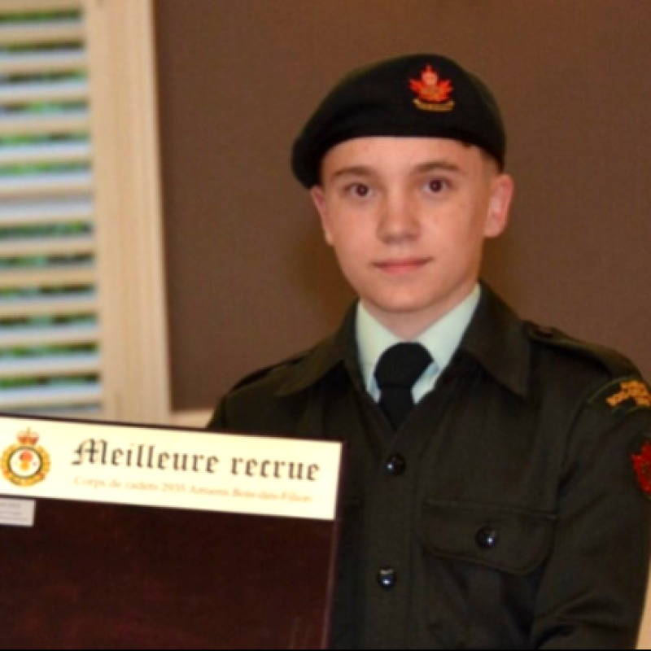

Décision attendue du Secrétariat de la CCE
Suite à la réponse du Canada (16 oct. 2026) et aux observations citoyennes de William Guindon (17 oct. & 10 nov. 2026), le Secrétariat de la CCE examine l'ouverture d'un Dossier factuel indépendant sur la Grande Tourbière de Blainville.
Échéance réglementaire de 60 jours : 15 décembre 2026 (HNE / EST)
Dossier CCE SEM-26-003 & William Guindon
William Guindon (15 ans) est l'auteur de la communication citoyenne internationale SEM-26-003 déposée auprès de la Commission de coopération environnementale (CCE / ACEUM). Cette démarche vise à faire appliquer les lois de protection de l'environnement et à bloquer l'expansion du site d'enfouissement de déchets dangereux de Stablex au cœur de la Grande Tourbière de Blainville.
Procédure internationale en cours
Après la réponse officielle du gouvernement du Canada (16 oct. 2026) et les observations de l'auteur (17 oct. 2026), le Secrétariat CCE examine la recommandation d'un dossier factuel indépendant.
Risque environnemental majeur
Alertes documentées de contamination et lixiviation au cadmium atteignant jusqu'à 320× les normes, menaçant la tourbière et les sources d'eau potable environnantes.
Politiques, Déontologie & Anti-SLAPP
Démarche citoyenne 100 % indépendante, protection contre les poursuites-bâillons (anti-SLAPP), zéro financement corporatif et rigueur probatoire stricte.
Consulter nos politiques & déontologie ↗Tableau de bord — Dossier CCE SEM-26-003
État de la mobilisation et indicateurs environnementaux
S'abonner à l'agenda public de William Guindon Synchroniser (Google, Apple, Outlook, iCal) ▾
Synchronisez en temps réel les dates clés du dossier CCE SEM-26-003, les échéances juridiques, conférences et événements publics directement dans votre calendrier personnel :
Revue de presse officielle
Retrouvez les reportages d'enquête, entrevues audiovisuelles et publications dans les grands médias nationaux et régionaux.
Protection d’une tourbière à Blainville : Le combat d’un adolescent à l’ONU
« À 14 ans, William Guindon a saisi le Rapporteur spécial des Nations unies sur les substances toxiques pour dénoncer l'expansion de Stablex dans la Grande Tourbière. »
« François Legault, vous détruisez notre avenir »
« Lettre ouverte percutante adressée au premier ministre du Québec au lendemain de l'adoption sous bâillon du Projet de loi 93 facilitant l'agrandissement du site. »
CBC Podcasts : This Is Montreal
« Grand format audio et baladodiffusion de CBC News sur les enjeux métropolitains de la région de Montréal et la mobilisation pour la Grande Tourbière. »
🔒 Protection des témoins (cookies) : le lecteur Spotify est bloqué par défaut. Aucun cookie tiers ni requête vers open.spotify.com n'est envoyé avant votre clic.
Entrevue exclusive : La démarche historique devant la CCE
« Entrevue télévisée approfondie avec William Guindon expliquant les recours internationaux en vertu de l'ACEUM et la protection de la Grande Tourbière. »
Les As de l’info : Super William à la rescousse de la grande tourbière
« Portrait d'un jeune engagé qui utilise le droit international et la science pour protéger les espèces menacées et la biodiversité boréale. »
Blainville teenager takes Stablex fight international
« Investigative feature on how a 15-year-old student took on multinational waste operators and environmental deregulation via trinational legal mechanisms. »
Porter plainte à l’international pour faire respecter les lois en environnement
« En mai dernier, un adolescent du Québec a porté plainte contre le Canada auprès de la Commission de coopération environnementale... dans le cadre de l’agrandissement d’un site de déchets dangereux à Blainville. »
Tourbière de Blainville : bientôt enfouie sous les déchets ?
« Enquête de fond de l'Agence Science-Presse sur les enjeux écologiques de la Grande Tourbière, les risques de contamination au cadmium et les recours internationaux SEM-26-003 auprès de la CCE. »
Stablex debate returns to Blainville City Hall
« Couverture anglophone des Laurentides rapportant les représentations citoyennes au conseil municipal de Blainville et la contestation de l'agrandissement de la décharge toxique. »
Curium Mag — Entrevue grand format : La rigueur scientifique face aux déchets toxiques
Entrevue exclusive déjà tournée pour le magazine québécois science et société des 14–17 ans. Décorticage de la preuve CCE SEM-26-003, spectrométrie de masse et cadmium.
Lab22 (Jour de la Terre) — Projet documentaire transition écologique scolaire
Tournage documentaire avec le laboratoire de la transition écologique dans les écoles secondaires. Valorisation de la recherche citoyenne indépendante pour les milieux humides.
Vous cherchez une entrevue, un reportage ou une conférence précise ?
Retrouvez la chronologie complète et vérifiée de toutes les parutions médiatiques : passages télévisés (Radio-Canada, CBC, TVBL), enquêtes de presse écrite (La Presse, Le Devoir, The Rover), balados et allocutions citoyennes.
Accéder à toutes les parutions & entrevues (Archive intégrale)Dernières publications & Photos récentes
Suivez les derniers articles d'analyse et les photographies authentiques de la Grande Tourbière de Blainville et du dossier CCE SEM-26-003.

Preuve CCEConfirmation officielle CCE : Premier mineur de l'histoire du mécanisme SEM (depuis 1994)
Le Secrétariat de la CCE confirme formellement par écrit que William Guindon est le premier mineur en 32 ans à déposer une communication citoyenne.
Avis de clarification publique : Absence de collaboration et stricte indépendance
Mise au point officielle de William Guindon rappelant le caractère strictement individuel et autofinancé du dossier SEM-26-003.
Plaidoyer pour l'autonomie juridique des adolescents : briser le plafond de verre de l'âgisme
Face au paternalisme bureaucratique, William Guindon interpelle les parlementaires pour reconnaître la capacité civique des 14-17 ans.

Données géographiques SIG · OpenStreetMap, uMap & Copernicus Sentinel-2
À propos de William Guindon
Un engagement précoce, une détermination sans compromis
William Guindon (né le 3 août 2011 à Sainte-Marthe-sur-le-Lac, au Québec) est un militant écologiste québécois, reconnu pour son engagement en faveur de la protection des écosystèmes et des droits des générations futures. Auteur à 14 ans de la communication officielle déposée auprès de la Commission de coopération environnementale (CCE) dans le cadre de l'ACEUM et d'un mémoire à l'ONU, il devient à 15 ans le premier mineur de l'histoire à remporter une décision positive de la CCE dans le dossier de la Grande Tourbière de Blainville.
Face au Projet de loi 93 adopté sous bâillon et aux rejets de cadmium mesurés jusqu'à 320 fois les critères de toxicité aiguë, il choisit rigoureusement la voie du droit et de la transparence probatoire, épaulé par les conseils bénévoles de seize scientifiques et juristes indépendants.
« À 14 ans, il m’a fallu 43 jours pour contraindre le Canada à se justifier devant une tribune internationale.
Étirez vos procédures autant que vous voulez : chaque année de délai vous rapproche de la retraite, et moi du Barreau.
Le 4 mai 2026, vous avez fui les questions d’un adolescent.
Le 4 mai 2040, vous devrez répondre à l’avocat. »

Actions clés
Faits marquants : de Blainville aux Nations unies
- 25 septembre 2026 Confirmation officielle de la CCE : Premier mineur de l'histoire du processus SEM (depuis 1994) L'Unité des Soumissions relatives aux questions d'exécution (SEM) du Secrétariat de la Commission de coopération environnementale confirme formellement par écrit : « depuis 1994, c'est la première fois qu'un auteur nous indique être mineur au moment de soumettre un dossier à la CCE », attestant du caractère historique inédit de la démarche citoyenne menée par William Guindon.
- 17 août 2026 Décision positive de la CCE — Réponse du Canada requise d'ici le 16 octobre 2026 Le Secrétariat de la CCE rend sa détermination officielle (PDF) ↗ en vertu des articles 24.27(2) et (3) de l'ACEUM, jugeant que la communication satisfaisait aux critères et demandant une réponse au gouvernement du Canada d'ici le 16 octobre 2026. William Guindon marque l'histoire en devenant le premier mineur à déposer et réussir à obtenir une décision positive dans le registre mondial des Soumissions SEM.
- 28 novembre 2021 Parmi les premiers enfants vaccinés contre la COVID-19 au Québec Alors âgé de dix ans, William Guindon est l'un des tout premiers enfants québécois de la tranche d'âge 5 à 11 ans à recevoir le vaccin contre la COVID-19. Sa démarche lui vaut les félicitations publiques du premier ministre du Québec, François Legault, rapportées par le Journal de Montréal.
- 8 avril 2025 Lettre ouverte dans Le Devoir : « François Legault, vous détruisez notre avenir » Il publie une lettre ouverte dans le quotidien Le Devoir, dans laquelle il interpelle directement le chef du gouvernement québécois sur les conséquences environnementales et intergénérationnelles du projet d'expansion du site Stablex, autorisé par le Projet de loi 93 adopté sous bâillon malgré l'avis défavorable du BAPE.
- 1ᵉʳ mai 2026 Communication internationale SEM-26-003 (CCE / ACEUM) Il dépose officiellement la communication SEM-26-003 « Enfouissement de matières dangereuses à Blainville » auprès de la Commission de coopération environnementale, organisme trinational créé dans le cadre de l'Accord Canada–États-Unis–Mexique. Il y soutient que le Canada manque à ses obligations légales en matière de protection des oiseaux migrateurs, des espèces en péril et de la qualité de l'eau. La CCE accuse réception le 4 mai 2026 et entame son examen en vertu des articles 24.27(2) et (3) de l'ACEUM.
- mai 2026 Déposition formelle au Rapporteur spécial des Nations unies Il transmet au Dr Marcos A. Orellana, Rapporteur spécial de l'ONU sur les substances toxiques et les droits de l'homme, le mémoire « Formal Deposition and Urgent Appeal: Human Rights Violations and Denial of Justice – The Stablex Case and the Imposition of Bill 93 in Quebec » ↗, au nom de la communauté de Blainville et à titre de représentant des générations futures. Le document soutient que le Projet de loi 93 viole l'article 7 de la Charte canadienne des droits et libertés, l'article 3 de la Déclaration universelle des droits de l'homme et la résolution 76/300 de l'Assemblée générale de l'ONU reconnaissant le droit à un environnement sain.
- juin 2026 Pétition environnementale no 546 (Vérificateur général du Canada / CEDD) Il soumet formellement la Pétition environnementale no 15-546 ↗ auprès du Commissaire à l'environnement et au développement durable (Bureau du vérificateur général du Canada), déclenchant l'obligation légale pour les ministères fédéraux (ECCC, MPO, Santé Canada) de répondre formellement sur le respect des lois fédérales (Loi sur les pêches, LEP, LCOM) à Blainville.
Le dossier Stablex
Un écosystème millénaire face à l'enfouissement de déchets dangereux
La Grande Tourbière de Blainville est un écosystème millénaire situé à Blainville, retenu par le ministère de l'Environnement du Québec à l'Atlas des territoires d'intérêt pour la conservation dans les basses-terres du Saint-Laurent. Le site Stablex, en exploitation depuis 1983, est le seul centre autorisé au Québec pour l'enfouissement final des matières issues du traitement par stabilisation et solidification de résidus industriels inorganiques.
- Septembre 2023 : Le Bureau d'audiences publiques sur l'environnement (BAPE) conclut que le projet d'expansion (Cellule 6) est « prématuré ».
- Décembre 2023 : Un prélèvement citoyen révèle une concentration de cadmium mesurée à 0,016 mg/L dans les eaux de surface avoisinantes, soit jusqu'à 320 fois le critère de qualité de l'eau pour la protection de la vie aquatique (toxicité aiguë, MELCCFP).
- Mars 2025 : Le gouvernement du Québec adopte le Projet de loi 93 sous bâillon, forçant le transfert de terrains appartenant à la Ville de Blainville, incluant 278 000 m² de milieux humides, pour permettre l'expansion du site.
- Recours bloqués : La loi contient des clauses excluant tout recours judiciaire sur le fond de la décision, ce que le Centre québécois du droit de l'environnement (CQDE) qualifie d'atteinte grave au droit à un recours effectif.
- Importations : Environ 41 % des matières enfouies à Blainville proviendraient de l'extérieur du Québec, dont approximativement 29 % des États-Unis, ce qui fonde la dimension transfrontalière du recours déposé auprès de la CCE.
C'est dans ce contexte que William Guindon choisit la voie du droit : plutôt que la confrontation, il mobilise les mécanismes nationaux et internationaux : BAPE, ACEUM, ONU, pour exiger que le Canada et le Québec respectent leurs propres obligations environnementales.
Documents juridiques & officiels
Consultation en ligne et téléchargement direct
Accédez à l'ensemble des pièces maîtresses versées au registre de la Commission de coopération environnementale et aux instances internationales.
Observations de l'auteur sur la réponse du Canada (17 octobre 2026)
Mémoire formel en 7 moyens de droit réfutant la tentative de rejet du Canada (pétition BVG 0546) et exigeant la constitution d'un Dossier factuel indépendant. Accompagné de la réponse officielle d'Ottawa (72-RSP) et de l'accusé formel de la CCE.
Détermination officielle CCE & Soumission citoyenne
Décision formelle du Secrétariat CCE sommant le gouvernement du Canada de répondre aux allégations de défaut d'application des lois environnementales, faisant suite au dépôt de la soumission SEM-26-003 par William Guindon.
Registre documentaire officiel complet (222 pièces probatoires)
Retrouvez l'intégralité des mémoires citoyens, expertises toxicologiques, dépositions à l'ONU, enregistrements de lobbying et correspondances ministérielles avec moteur de recherche et filtres.
Questions fréquentes (FAQ)
Tout comprendre sur les démarches citoyennes et le dossier SEM-26-003
Qui est William Guindon ?
William Guindon (né en 2011 au Québec) est un militant écologiste québécois et étudiant dans les Laurentides. Auteur de la communication SEM-26-003 déposée à 14 ans, il devient à 15 ans le premier mineur dans l'histoire des Soumissions environnementales (SEM) à obtenir une détermination positive de recevabilité devant la Commission de coopération environnementale (CCE / ACEUM). Consultez sa biographie détaillée, la chronologie Stablex ou la fiche de presse.
Qu'est-ce que le dossier SEM-26-003 auprès de la CCE ?
La communication SEM-26-003 (« Enfouissement de matières dangereuses à Blainville ») dénonce le défaut d'application des lois environnementales fédérales canadiennes (oiseaux migrateurs, espèces en péril, rejet de cadmium) dans le cadre de l'expansion du site Stablex dans 278 000 m² de milieux humides. Retrouvez la chronologie complète du dossier.
Pourquoi la Grande Tourbière de Blainville est-elle menacée ?
La Grande Tourbière de Blainville abrite une biodiversité exceptionnelle et constitue un puits de carbone majeur. Le projet d'expansion autoriserait l'enfouissement de millions de tonnes de résidus, détruisant 278 000 m² d'écosystèmes rares et posant des risques pour les eaux où des concentrations de cadmium ont été mesurées jusqu'à 320 fois le critère de qualité de l'eau pour la protection de la vie aquatique (toxicité aiguë, MELCCFP, échantillon du 2 déc. 2023). Visualisez les périmètres sur la carte interactive SIG.
William Guindon a-t-il reçu la réponse officielle du gouvernement du Canada ?
Oui. Le 16 octobre 2026, le gouvernement du Canada a formellement déposé sa réponse officielle (pièce 72-RSP) auprès du Secrétariat de la CCE. William Guindon en a reçu notification et a déposé le 17 octobre 2026 un mémoire d'observations en 7 moyens juridiques réfutant la tentative d'évitement d'Ottawa et demandant la constitution d'un Dossier factuel indépendant.
Quelles sont les prochaines étapes suite au dépôt de la réponse du Canada ?
Suite au dépôt de la réponse du Canada le 16 octobre 2026 et des observations citoyennes le 17 octobre 2026, le Secrétariat de la CCE examine le dossier en vertu de l'article 24.28 de l'ACEUM pour déterminer s'il recommande l'élaboration d'un Dossier factuel indépendant soumis au vote du Conseil des ministres trinational. Suivez le suivi de procédure en direct.
Coordonnées, Médias & Canaux Sécurisés
Vous pouvez joindre William Guindon directement et en toute simplicité par courriel officiel, téléphone, Messenger ou via les canaux chiffrés ci-dessous :
Contacter William Guindon
Canaux directs et accessibles à tous : citoyennes et citoyens, journalistes, scientifiques, étudiants ou organismes. Pour toute question, suggestion ou échange relatif à la Grande Tourbière de Blainville et au dossier SEM-26-003 :
Veille documentaire & Suivi en accès libre (Flux RSS) Suivez les publications, communiqués et mises à jour CCE sans aucun profilage ni collecte de courriel
Pour garantir une indépendance intégrale et respecter strictement votre vie privée (zéro collecte de courriel, zéro base de données externe), ce site ne diffuse aucune infolettre commerciale. Toutes les mises à jour citoyennes, communiqués de presse et développements du dossier CCE SEM-26-003 sont distribués en temps réel via syndication libre et ouverte.
Garantie vie privée par conception : Le flux RSS est lu directement par votre agrégateur local (NetNewsWire, Feedly, Thunderbird, etc.) sans inscription préalable, sans témoin de connexion et sans transmission d'adresse de contact.
William Guindon — Page Officielle
Facebook • Fil d'actualité et publications en directProtection de votre vie privée
Pour protéger vos données personnelles, aucun contenu ni cookie Facebook n'est chargé automatiquement en arrière-plan.